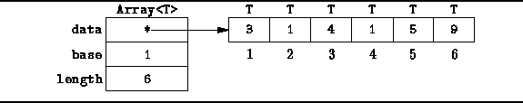
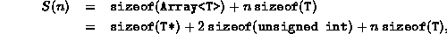
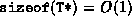
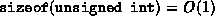
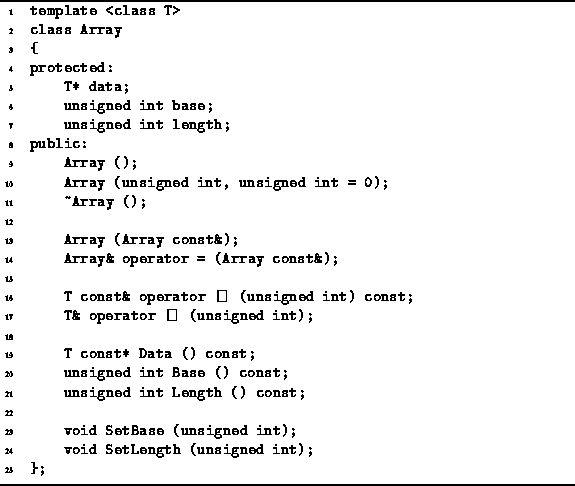

Data Structures and Algorithms
with Object-Oriented Design Patterns in C++
Data Structures and Algorithms
with Object-Oriented Design Patterns in C++Probably the most common way to aggregate data is to use an array. While the C++ programming language does indeed provide built-in support for arrays, that support is not without its shortcomings. Arrays in C++ are not first-class data types. There is no such thing as an array-valued expression. Consequently, you cannot use an array as an actual value parameter of a function; you cannot return an array value from a function; you cannot assign one array to another. (Of course, you can do all of these things with a pointer to an array). In addition, array subscripts range from zero to N-1, where N is the array size, and there is no bounds checking of array subscript expressions. And finally, the size of an array is static and fixed at compile time, unless dynamic memory allocation is explicitly used by the programmer.
Some of these characteristics of arrays are due in part to the fact that in C++, given a pointer, T* ptr, to some type, T, it is not possible to tell, just from the pointer itself, whether it points to a single instance of a variable of type T or to an array of variables of type T. Furthermore, even if we know that the pointer points to an array, we cannot determine the actual number of elements in that array.
It is primarily to address these deficiencies
that we introduce the Array object
which is implemented as a generic class.
Figure  illustrates the Array object
is represented in the memory of the computer.
Two structures are used.
The first is a structure which comprises three fields--data, base and length.
The member variable data is a pointer to the array data.
Variables base and length
are used in the array subscript calculation.
The second structure comprises contiguous memory locations
which hold the array elements.
In the implementation given below,
this second structure is allocated dynamically.
illustrates the Array object
is represented in the memory of the computer.
Two structures are used.
The first is a structure which comprises three fields--data, base and length.
The member variable data is a pointer to the array data.
Variables base and length
are used in the array subscript calculation.
The second structure comprises contiguous memory locations
which hold the array elements.
In the implementation given below,
this second structure is allocated dynamically.

Figure: Memory Representation of Array Objects
The C++ declaration of the Array<T> class template
is given in Program .
The Array<T> class has three protected member variables,
data, base and length,
constructors, destructor, and various member functions.
The number of member functions has been kept to the bare minimum in
this example--in the ``real world'' you can expect that such a class
would contain many more useful member functions.
On the basis of Program ,
we can now calculate the total storage required
to represent Array<T> objects.
Let S(n) be the total storage (memory) needed to
represent an Array<T> object
which includes n array elements of type T.
S(n) is given by

where the function  is the number of bytes
used for the memory representation
of an instance of an object of type X.
is the number of bytes
used for the memory representation
of an instance of an object of type X.
In C++, the sizes of the basic (built-in) data types are fixed constants. So too are the sizes of all pointers. Hence,  and . Therefore,

Unfortunately, since Array<T> is a generic class, we have no a priori knowledge of the amount of storage used by an object of type T. However, if we assume that the amount of storage used by an object of type T is a fixed constant, then S(n)=O(n).

Program: Array<T> Class Definition
 Copyright © 1997 by Bruno R. Preiss, P.Eng. All rights reserved.
Copyright © 1997 by Bruno R. Preiss, P.Eng. All rights reserved.